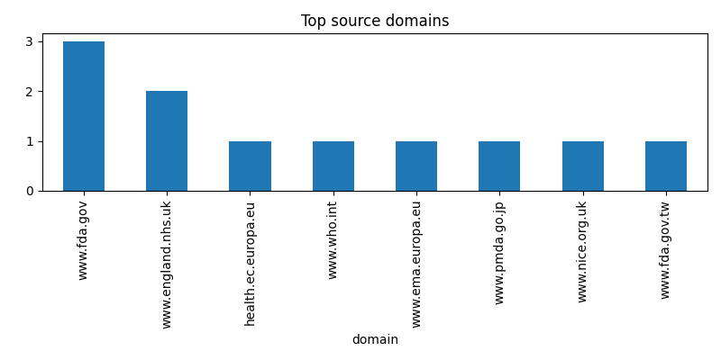

本報告由 New-trend 自動化擷取產生，統整來源與簡短摘要，適合當作月報起稿與業務提藥使用。

| # | 來源 | 標題 | 摘要 / meta | 連結 |
|---|---|---|---|---|
| 1 | nan | nan | 403 Client Error: Forbidden for url: https://www.oecd.org/en/topics/health.html | 來源 |
| 2 | www.who.int | Global Health Observatory | The GHO data repository is WHO's gateway to health-related statistics for its 194 Member States. It provides access to over 1000 health topics indicators | 來源 |
| 3 | health.ec.europa.eu | A pharmaceutical strategy for Europe - Public Health - European Commission | Adopted on 25 November 2020, the Pharmaceutical Strategy for Europe (reader-friendly version) aims at creating a future proof regulatory framework… | 來源 |
| 4 | www.fda.gov | Novel Drug Approvals at FDA | FDA | Innovation drives progress. When it comes to innovation in the development of new drugs and therapeutic biological products, FDA’s Center for Drug Evaluation and Research (CDER) supports the pharmaceutical industry at every step of the process. | 來源 |
| 5 | www.fda.gov | Drug Trials Snapshots | FDA | Drug Trials Snapshots: breaking down the what, how and why. Drug Trials Snapshots are part of an overall FDA effort to make demographic data more available and transparent. | 來源 |
| 6 | www.ema.europa.eu | Medicines for human use under evaluation | European Medicines Agency (EMA) | Each month, the European Medicines Agency's (EMA) publishes an updated list of medicines for human use currently under evaluation by EMA’s Committee for Medicinal Products for Human Use (CHMP) to obtain a marketing authorisation in the European Union (EU). | 來源 |
| 7 | www.pmda.go.jp | Early Consideration | Pharmaceuticals and Medical Devices Agency | Early Consideration is reference information and point of view at that time for promoting the practical application of new technologies and other innovations and the development of innovative pharmaceuticals, etc., although scientific knowledge and information have not yet been fully accumulated, Please note that this information may change in the future based on new knowledge, scientific advances, etc. | 來源 |
| 8 | www.fda.gov | FDA Adverse Event Reporting System (FAERS) Database | FDA | FDA Adverse Event Reporting System (FAERS) Database | 來源 |
| 9 | www.england.nhs.uk | NHS England » Our work | NHS England » Our work | 來源 |
| 10 | www.england.nhs.uk | Statistics | Statistics | 來源 |
| 11 | www.nice.org.uk | Published guidance, NICE advice and quality standards | Guidance | NICE | Browse the complete list of all our published health and social care guidance, including guidelines, NICE advice and quality standards | 來源 |
| 12 | nan | nan | 404 Client Error: for url: https://lmspiq.fda.gov.tw/web/DRPIQ/DRPIQ6000 | 來源 |
| 13 | www.fda.gov.tw | 新成分新藥核准審查報告摘要 - 查驗登記專區 - 藥品 - 業務專區 - 衛生福利部食品藥物管理署 | 衛生福利部食品藥物管理署 | 來源 |
| 14 | nan | nan | 403 Client Error: Forbidden for url: https://www.nhi.gov.tw/ch/np-2476-1.html | 來源 |